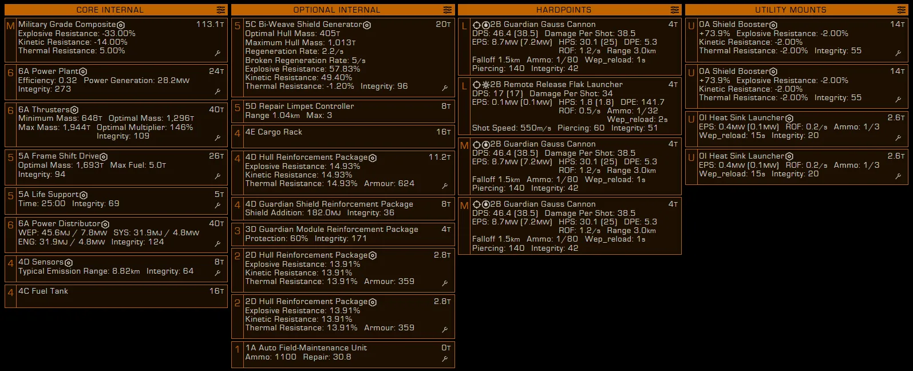

The FAS is lacking in shield capacity and firepower, however, it has amazing yaw speed. Beware the fragile cockpit and exposed power distributor. Variant that sacrifices some hull for ability to repair.
Build Link: https://s.orbis.zone/398h
For more information on how to use this build effectively, please see the Anti-Xeno Flight Manual (AXFM).

Note that power priorities should be set accordingly to your specific chosen module
Federal Assault Ship Wireframe with permission from Anthony Hunt - (elite-dangerous-blog) - Archive Link, as site no longer exists.